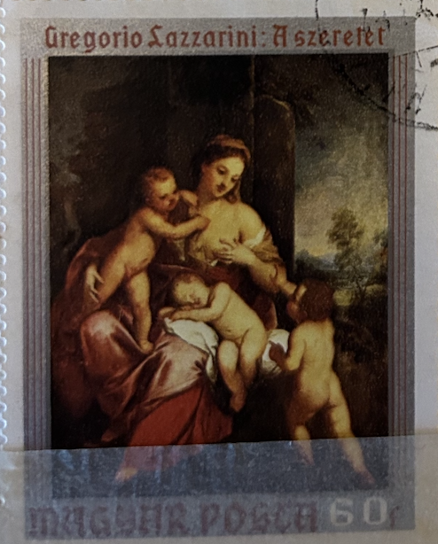
| SOURCE | TITLE| IMAGE MATCH | click to source page |
| MutualArt | Therese von Eissl (Oberndorfer) | 1 Artworks at Auction | MutualArt | 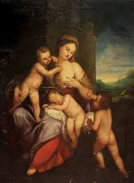 |
| Christie's Auction | Studio of Jacob Jordaens (Antwerp 1593-1678) , Saint Martin healing a possessed man | Christie's | 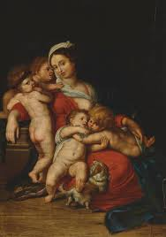 |
| Invaluable.com | Sold at Auction: Gregorio Lazzarini, Gregorio Lazzarini (dead 1730)-circle | 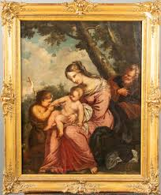 |
| Invaluable.com | Page 2: Andrea del Sarto Paintings & Artwork for Sale | Andrea del Sarto Art Value Price Guide | 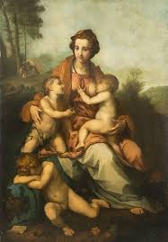 |
| eBay | Vintage Postcard Art Andrea Del Sarto "Charity" Louvre Museum | eBay | 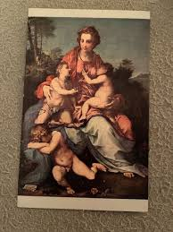 |
| Old postcards | Andrea D' Agnolo Del Sarto Art Postcard | OldPostcards.com | 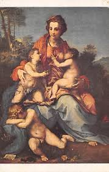 |
| Album Online | Caritas - Charity - 1518-19. by Andrea del Sarto Cantas. in Louvre, Paris, France. Andrea del Sarto, true name Andrea d'Agnolo di Francesco di Luca di Paolo del Migliore, - Album alb9106816 | 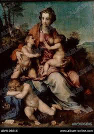 |
| MutualArt | Andrea del Sarto | Nursing Madonna (19th Century) | MutualArt | 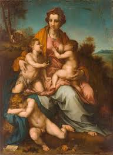 |
| IMAGO | Caritas - Charity - 1518-19 by Andrea del Sarto Cantas in Louvre, Paris, France Andrea del Sarto | 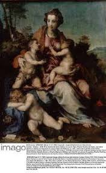 |
| Canvas Replicas | Andrea del Sarto Painting Reproductions for Sale | Canvas Replicas | 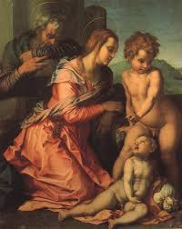 |
| Fine Art America | Charity Canvas Print by Andrea del Sarto - Fine Art America | 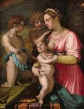 |
| Catholic Tradition | Baroque Gallery | 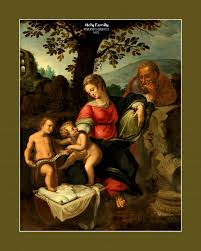 |
| Invaluable.com | Sold at Auction: Pier Francesco Foschi, Foschi, Pier Francesco (Kreis) | 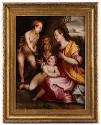 |
| Album Online | Breast Wall Art for Sale by Album | 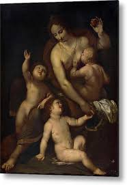 |
| LOT-ART | ALLEGORY OF CHARITY, Michele Tosini, called Michele di Ridolfo del Ghirlandaio in United States | 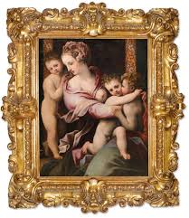 |
| Wikimedia.org | File:MADONNA AND CHILD, WITH NOLI ME TANGERE BEYOND).jpg - Wikimedia Commons | 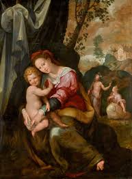 |
| Sotheby's | Allegory of Charity | Master Paintings Part II | 2025 | Sotheby's | 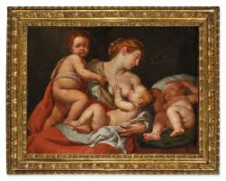 |
| Art.com | Madonna and Child with an Angel and the Infant St. John the Baptist Giclee Print - Francesco Salviati | Art.com | 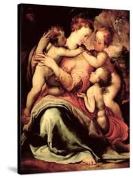 |
| MutualArt | Ventura Salimbeni | Christ Exchanging His Heart With Saint Catherine (1605) | MutualArt | 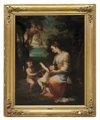 |
| Auktionshaus im Kinsky | Artist of the 17th century | im Kinsky auction house | 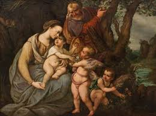 |
| 1st Art Gallery | The Mystic Marriage of St. Catherine of Alexandria, c.1526-27 by Correggio (Antonio Allegri) Reproduction For Sale | 1st Art Gallery | 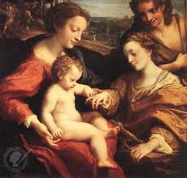 |
| Wikimedia.org | File:Giulio romano, madonna col bambino e san giovannino, 1523 ca.jpg - Wikimedia Commons | 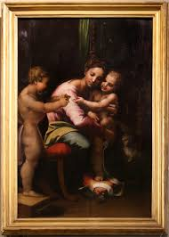 |
| Tajan | Lot - 17th century Florentine school, Madonna and Child with Saint John the Baptist, beech panel | 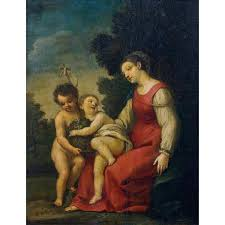 |
| Accademia.org | The Tribune in the Galleria: David, Allori, Bronzino, Santi di Tito & more | 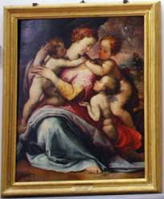 |
| 1stDibs | Virgin with Child and St John, oil on marble, late 16th century Florentine school at 1stDibs | 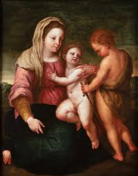 |
| markyanceyphoto.com | Galleria dell'Accademia – Part 4 – Other Works - Mark Yancey Photo | 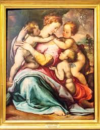 |
| Fine Art America | De Putti Tapestries for Sale - Fine Art America | 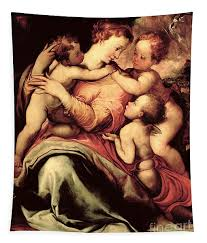 |
| My Open Museum | York Art Gallery () - Artworks & Artists | My Open Museum | 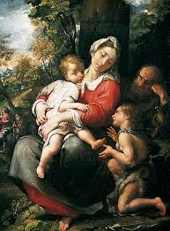 |
| MeisterDrucke - Art Prints, Paintings & Reproductions | Giuseppe (1568-1640) Cesari • Buy exclusive fine art prints | 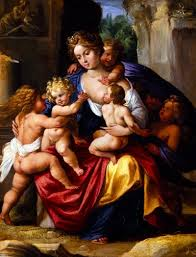 |
| Dorotheum | Florentine School circa 1580 - Old Master Paintings 2012/10/17 - Estimate: EUR 20.000 to EUR 30.000 - Dorotheum | 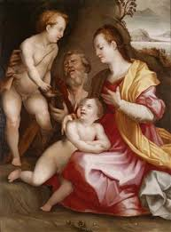 |
| Meisterdrucke | Andrea del Sarto - Charity - (MeisterDrucke-33257).jpg | 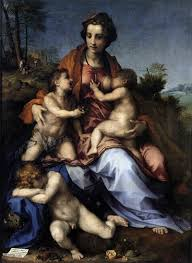 |
| MutualArt | Girolamo Macchietti | Madonna and Child, with Noli Me Tangere beyond | MutualArt | 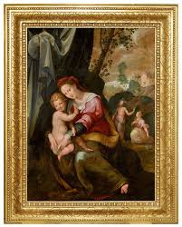 |
| Flickr | IMG_0218 | Charity by Andrea del Sarto | lanced5943 | Flickr | 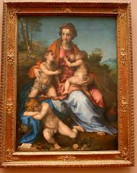 |
| Art Prints On Demand | Raphael / Marriage of Mary / 1504 - (Raphael) Raffaello Santi as art print or hand painted oil. | 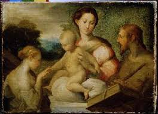 |
| PubHist | Studio of Frans Floris - Susannah and the Elders | 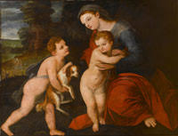 |
| Artvee | Frans Floris - Artvee | 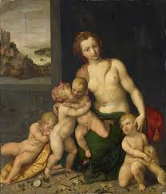 |
| Ocean's Bridge Oil Paintings | Holy Family with St John the Baptist | Oil Painting Reproduction | 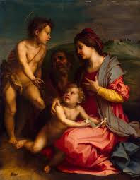 |
| PX Canvas Prints | Madonna And Child With An Angel And The Infant St. John The Baptist Canvas Print by Francesco De Rossi Salviati Cecchino - PX Canvas Prints | 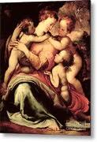 |
| Granger - Historical Picture Archive | Image of ROMANO: HOLY FAMILY, C1521. - The Holy Family With Saint John The Baptist. Oil On Panel By Giulio Romano, C1521. From Granger - Historical Picture Archive | 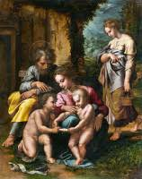 |
| PubHist | Andrea del Sarto (1486 - 1530) - Florentine painter | 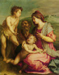 |
| PaintingZ | Charity by Andrea del Sarto Reproduction Painting for Sale | 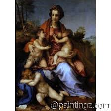 |
| Wikimedia.org | File:Tosini Allegory of Charity.jpg - Wikimedia Commons | 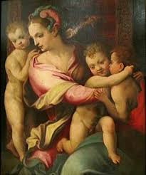 |
| Paintings Before 1800 | Titian 2 | 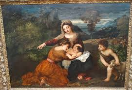 |
| Christian Iconography | The Holy Family with John the Baptist, Andrea del Sarto | 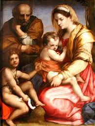 |
| Le Louvre | La Charité - Louvre site des collections | 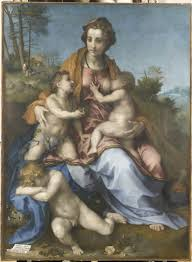 |
| NiceArtGallery.com | The Virgin and Child with St. John the Baptist, St. Anne and St. Catherine of Alexandria reproduction by Raphael for sale - NiceArtGallery.com | 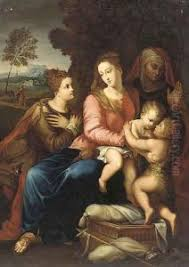 |
| Fine Art America | Leonardo Di Vinci Framed Art Prints for Sale - Fine Art America | 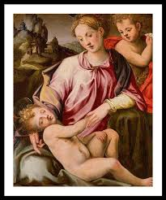 |
| Invaluable.com | Battista Naldini Artwork for Sale at Online Auction | Battista Naldini Biography & Info | 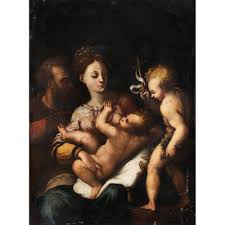 |
| Museum Boijmans Van Beuningen | The Holy Family with St John the Baptist - Museum Boijmans Van Beuningen | 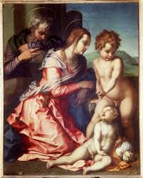 |
| Christie's Auction | Studio of Fernando Yáñez de la Almedina (1506-1531) , Saint Ambrose | Christie's | |
| Bonhams | Bonhams : After Antonio Allegri, called il Correggio, 19th century The Mystic Marriage of Saint Catherine | |
| PICRYL | 59 Paintings of the italian renaissance in france, Virgin mary Images: PICRYL - Public Domain Media Search Engine Public Domain Search | |
| Spiffing Prints | Carracci Annibale - Madonna And Child With St John — Spiffing Prints | |
| iArtPrints.com | Correggio The Mystic Marriage of St. Catherine of Alexandria Stretched Canvas Print / Canvas Art for sale - iArtPrints.com | |
| MutualArt | Francesco Morandini - 40 Artworks for Sale & Sold | |
| MutualArt | Italian School, 19th Century | Allegory of Charity (19th Century) | MutualArt | |
| Holy Trinity with Mary. YBH | ||
| WahooArt.com | Order a hand made painting of Madonna with Saint Jerome (after Correggio) - john graham gilbert | |
| Invaluable.com | Andrea del Sarto Paintings & Artwork for Sale | Andrea del Sarto Art Value Price Guide | |
| Fine Art America | Charity, by 1530 Canvas Print by Andrea del Sarto - Fine Art America |
.jpg){kind=link}
{kind=link}
{kind=link}